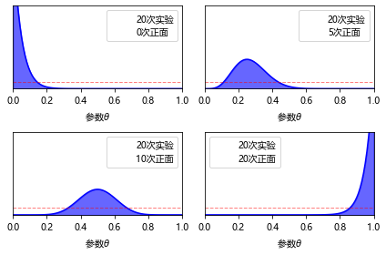
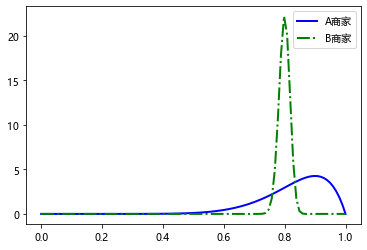
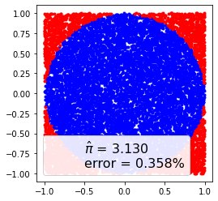
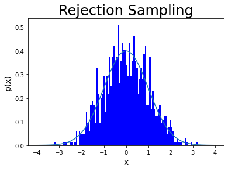
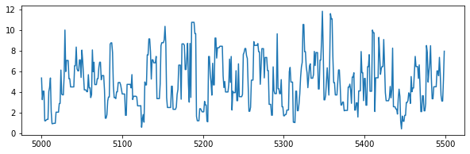
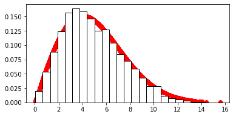
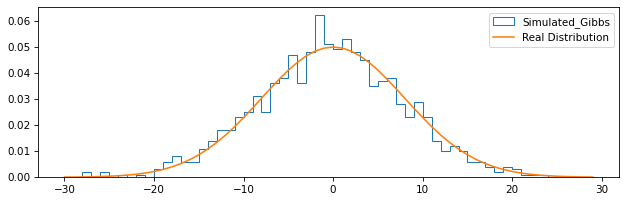
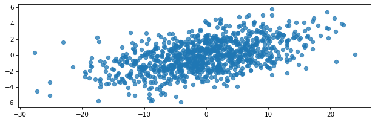

python-人工智能数学基础17
目录
17 贝叶斯分析
17.1 贝叶斯分析概述
17.1.2 贝叶斯学派与经典统计学派的争论
统计推断是根据样本信息对总体分布或总体的特征数进行推断，事实上，这经典学派对统计推断的规定，这里的统计推断使用到两种信息：总体信息和样本信息；而贝叶斯学派认为，除了上述两种信息以外，统计推断还应该使用第三种信息：先验信息。
统计学派
观察到的数据被认为是随机的, 因为它们是随机过程的实现, 因此每次观察系统时都会发生变化.
模型参数被认为是固定的, 参数的值是未知的, 但它们是固定的, 因此我们对它们进行条件设置.
贝叶斯学派
数据被认为是固定的, 它们使用的是随机的, 但是一旦它们被拿到手了, 就不会改变.
贝叶斯用概率分布来描述模型参数的不确定性, 这样一来, 它们就是随机的.
17.1.3 贝叶斯公式
- 公式:
- 估计(离散型):
- 估计(连续型):
17.1.4 贝叶斯解释
1 先验信息和先验分布
指抽样之前对所研究的问题的认识, 记为$\pi(\theta)$
2 后验分布
一旦获得抽样信息$x$后, 人们对参数$\theta$的认识就发生了改变, 调整后会获得对$\theta$的新认识, 称为后验概率, 记为$\pi(\theta|x)$
3 共轭先验分布
先验分布的选择具有主观性, 一般选择无信息先验分布和共轭先验分布
假如由样本$x$信息得到的后验分布概率$\pi(\theta|x)$和先验密度函数$\pi(\theta)$属于相同的分布类型, 则称$\pi(\theta)$是参数$\theta$的共轭先验分布
例 17.2 (共轭先验的例子Beta-伯努利分布)
设事件$A$发生的次数为$x$, 发生的概率为$\theta$, 为了估计$\theta$而做$n$次独立事件
显然$x\sim B(n, \theta)$(二项分布), 得到似然函数:
假设先验分布为均匀分布$U(0,1)$, 即$\pi(\theta)=1$(概率分布函数为1), $\theta\in(0,1)$
由贝叶斯公式求后验概率分布:
上式是参数为$x+1$和$n-x+1$的贝塔分布, 记为$\mathrm{Beta}(x+1, n-x+1)$
如抛硬币10次$(n=10)$, 5次正5次反$(x=5)$, 那么后验概率就是$\mathrm{Beta}(6,6)$, 贝塔分布的均值就是0.5 ($\mathrm{Beta}(\alpha, \beta)$的数学期望$E(X)=\frac{\alpha}{\alpha+\beta}$)
例 17.3
分别进行4次抛硬币实验, 每次抛20下, 抛出正面的次数分别是0, 5, 10, 20次, 观察不同的样本信息对先验分布的调整. 先验分布选择$\mathrm{Beta}(1, 1)$(扔了0次0次正面?)
|

例 17.4
同一商品在淘宝中发现了两个不同的商家:
商家A有10条评论, 9条好评和1条差评
商家B有500条评论, 400条好评和100条差评
那么应该去选择哪家的商品?
解: 先验分布选择$\mathrm{Beta}(1,1)$, 商家评论的样本数据服从二项分布, 二项分布的共轭先验分布为Beta分布, $a=1, b=1$,
商家A试验次数$n=10$, 试验成功事件次数$x=9$, 因此商家A的后验分布为$\mathrm{Beta}(10, 2)$
商家B的后验分布为$\mathrm{Beta}(401, 101)$
|

Beta分布可以看作是一个概率的概率分布, 可以看出商家A的好评概率均值更高, 但是方差更大
$\mathrm{Beta}(\alpha, \beta)$的均值$E(X)$:
方差$D(X)$:
高斯-高斯共轭
17.2 MCMC (马尔科夫链蒙特卡罗) 概述
贝叶斯公式简洁直观, 更符合我们对事物的认知.
在贝叶斯分析中, 我们常常需要计算后验分布的期望, 方差等数字特征, 如果先验分布不是共轭先验分布, 那么后验分布往往不再是标准的分布, 这时后验分布计算涉及很复杂的积分, 这个积分在大部分情况下是不可能进行精确计算的
基于马尔科夫理论, 使用蒙特卡罗模拟方法回避后验分布表达式的复杂计算, 创造性地使用MCMC方法, 直接对后验分布的独立随机样本进行模拟, 再通过分析模拟样本获得均值等相关统计量.
17.2.1 蒙特卡罗方法
尽管很多问题都难以求解甚至无法用公式准确表达, 但我们可以通过采样来近似模拟, 这就是蒙特卡洛算法的基本思想.
$X$表示随机变量, 服从概率分布$p(x)$, 那么计算$p(x)$的期望时, 只要我们的抽样次数足够多, 就能够非常接近真实值
例 17.5 随机模拟计算圆周率
随机模拟计算圆周率$\pi$, 在一个边长为1的正方形中画一个内切圆, 在正方形内产生大量随机数, 只需要计算落在圆内点的个数和正方形内的点的个数比, 便近似得到了圆周率$\pi$的值
|

在贝叶斯方法中可以利用蒙特卡罗方法对数据进行随机采样, 从而避开后验分布的计算(以频率估算概率)
但如果X的概率分布不是常见的分布, 这就意味着我们无法直接得到这些非常见的概率分布的样本集
为了弥补直接抽样法的不足, 冯诺依曼提出取舍抽样法
取舍抽样法采用的是一种迂回的策略. 既然$p(x)$太复杂, 在程序中没法直接采样, 那么就选取一个容易采样的参考分布$q(x)$, 并且满足$p(x)\le Mq(x)$, 然后按照一定的策略拒绝某些样本, 剩下的样本就是来自所求分布$p(x)$
例 17.6 利用取舍抽样算法, 产生标准正态分布的随机样本
解:取[-4, 4]上的均匀分布密度函数为参考分布$q(x)$, 常量$M=3.5$
|

0.2864508736751647
17.2.2 马尔科夫链 (Markov Chain)
马尔科夫链(简称马氏链)定义比较简单, 它假设某一时刻状态转移的概率只依赖于前一个状态
马氏链核心三要素: 1. 状态空间 2. 无记忆性 3. 转移矩阵
例 17.7
一家连锁汽车租赁公司有3处门店, 租车和还车都可以选择任何一个门店, 从不同门店借出和归还车的概率如下表
| 借还车概率分布 | 1号店 | 2号店 | 3号店 |
|---|---|---|---|
| 1号店 | 0.5 | 0.3 | 0.3 |
| 2号店 | 0.2 | 0.1 | 0.6 |
| 3号店 | 0.3 | 0.6 | 0.1 |
如从1号店借出2号店归还的概率是0.15(书上是这么写, 我认为是0.3), 请问一辆车从2号门店借出, 公司前3次应该从哪家店找最快捷？
解：不同门店借出和归还的概率可以用一个转换矩阵p来表示
该车初始状态的概率为$\pi_0\left[\pi_0(1),\pi_0(2),\pi_0(3)\right]$(从2号门店借出)
第一次归还不同门店的概率$\pi_1=\pi_0\mathbf{P}$
第二次归还不同门店的概率$\pi_2=\pi_1\mathbf{P}$
依此类推, 第$n$次归还不同门店的概率$\pi_n=\pi_{n-1}\mathbf{P}$
车在不同时间归还的门店分布概率$\pi_t$就形成了一个马氏链
|
Current round: 1
[[0.2 0.1 0.6]]
Current round: 2
[[0.3 0.43 0.18]]
Current round: 3
[[0.29 0.241 0.366]]
Current round: 4
[[0.303 0.3307 0.2682]]
Current round: 5
[[0.2981 0.28489 0.31614]]
Current round: 6
[[0.30087 0.307603 0.291978]]
Current round: 7
[[0.299549 0.2962081 0.3040206]]
Current round: 8
[[0.3002223 0.30189787 0.29799162]]
Current round: 9
[[0.29988821 0.29905145 0.30100457]]
Current round: 10
[[0.30005577 0.30047435 0.29949779]]
Current round: 11
[[0.29997209 0.29976284 0.30025112]]
Current round: 12
[[0.30001395 0.30011858 0.29987444]]
Current round: 13
[[0.29999302 0.29994071 0.30006278]]
Current round: 14
[[0.30000349 0.30002965 0.29996861]]
Current round: 15
[[0.29999826 0.29998518 0.30001569]]
Current round: 16
[[0.30000087 0.30000741 0.29999215]]
Current round: 17
[[0.29999956 0.29999629 0.30000392]]
Current round: 18
[[0.30000022 0.30000185 0.29999804]]
Current round: 19
[[0.29999989 0.29999907 0.30000098]]
Current round: 20
[[0.30000005 0.30000046 0.29999951]]
Current round: 21
[[0.29999997 0.29999977 0.30000025]]
Current round: 22
[[0.30000001 0.30000012 0.29999988]]
Current round: 23
[[0.29999999 0.29999994 0.30000006]]
Current round: 24
[[0.3 0.30000003 0.29999997]]
Current round: 25
[[0.3 0.29999999 0.30000002]]
Current round: 26
[[0.3 0.30000001 0.29999999]]
Current round: 27
[[0.3 0.3 0.3]]
Current round: 28
[[0.3 0.3 0.3]]
Current round: 29
[[0.3 0.3 0.3]]
Current round: 30
[[0.3 0.3 0.3]]
$\pi_1 = \left[0.2, 0.1, 0.6\right]$, 选择概率最大的, 因此第 1 次先从 3 号门店找
$\pi_2 = \left[0.3, 0.43, 0.18\right]$, 因此第 2 次从 2 号门店找
$\pi_3 = \left[0.29, 0.241, 0.366\right]$, 因此第 3 次从 3 号门店找
17.3 MCMC采样
【数之道】马尔可夫链蒙特卡洛方法是什么？十五分钟理解这个数据科学难点
MCMC的采样: 设当前采样点为$x$, 下一个采样点是$x^*$
定义17.3 如果非周期马氏链的状态转移矩阵$q(x^*|x)$和概率分布$p(x)$满足:
则称概率分布$\color{Blue}{p(x)}$是马氏链的平稳分布, 也被称为马氏链的细致平稳条件
定义17.4 但是一般情况下, 目标平稳状态分布和某一个马尔科夫链状态转移矩阵不满足细致平稳条件:
可以引入一个$\color{Green}{\alpha(x, x^*)}$, 使得:
其中$\color{Green}{\alpha(x^,x)}=\color{Blue}{p(x)}\color{Red}{q(x^|x)}, \color{Green}{\alpha(x,x^)}=\color{Blue}{p(x^)}\color{Red}{q(x|x^*)}$
MCMC算法:
输入任意给定的马尔科夫链状态转移矩阵$Q$, 目标平稳分布$\pi(x)$, 设定状态转移次数阈值$n_1$, 需要的样本数$n_2$
从任意简单概率分布得到初始状态值$x_0$
for $t=0$ in $n_1 + n_2 - 1$:
a. 从条件概率分布$Q(x|x_t)$得到样本值$x^*$
b. 从均匀分布中采样$U\sim\left[0,1\right]$
c. if $u<\alpha(x_t,x^) = \pi(x^)Q(x^,x_t)$: 接受$x_t\to x^$, 即$x_{t+1}=x^*$
d. else: 不接受转移, $t=max\{t-1, 0\}$
但在转移过程中的接受率$\alpha(x,x^*)$可能偏小, 造成采样过程中的马氏链收敛到平稳分布$p(x)$的速度太慢, 提出改进: M-H算法
M-H算法
输入任意给定的马尔科夫链状态转移矩阵$Q$, 目标平稳分布$\pi(x)$, 设定状态转移次数阈值$n_1$, 需要的样本数$n_2$
从任意简单概率分布得到初始状态值$x_0$
for $t=0$ in $n_1 + n_2 - 1$:
a. 从条件概率分布$Q(x|x_t)$得到样本值$x^*$
b. 从均匀分布中采样$U\sim\left[0,1\right]$
c. if $u<\alpha(x_t,x^) = \pi(x^)Q(x^,x_t)\color{Brown}{=min\{\frac{\pi()Q(x^, x_t)}{\pi(t)Q(x_t, x^)},1\}})$(将两数中最大的一个放大到1): 接受$x_t\to x^$, 即$x_{t+1}=x^$
d. else: 不接受转移, $t=max\{t-1, 0\}$
例 17.8 使用M-H算法实现对瑞利分布的采样
瑞利分布的概率密度函数为:
解:
参考分布$q(i, j)$选取: $df=x_t$的卡方分布
目标分布: 标准差为4($\sigma=4$)的瑞利分布
1 用M-H算法实现对瑞利分布的采样, 转移概率用自由度为$x_t$的卡方分布
|
被拒绝的样本数目: 3408
2 显示马氏链部分样本路径图、随机模拟样本的直方图
|


17.4 Gibbs 采样
An introduction to Gibbs sampling (Youtube)
一种从二(多)维概率分布中进行采样的方法
可以对平面上任意两点$A(x_A, y_A)$和$B(x_B, y_B)$构造如下的转移概率矩阵:
根据上面构造的转移矩阵, 可得平面上的任意两点$A$和$B$满足细致平稳条件$\pi(A)P(B|A)=\pi(B)P(A|B)$, 马氏链将收敛到平稳分布$\pi(X)$
如A和B的转移矩阵:
B/A 0 1 0 0.1 0.4 1 0.3 0.2 转移概率矩阵$P(A|B)$:
B/A 0 1 0 0.1 / (0.1 + 0.4) = 0.2 0.4 / (0.1 + 0.4) = 0.8 1 0.3 / (0.3 + 0.2) = 0.6 0.2 / (0.3 + 0.2) = 0.4 转移概率矩阵$P(B|A)$:
B/A 0 1 0 0.1 / (0.1 + 0.3) = 0.25 0.4 / (0.1 + 0.3) = 2 / 3 1 0.3 / (0.4 + 0.2) = 0.75 0.2 / (0.4 + 0.2) = 1 / 3
二维情况的Gibbs采样算法描述如下:
(1) 随机初始化状态$x_0$和$y_0$
(2) 循环进行采样(当前采样点$t$)
①$y_{t+1}\sim p(y|x_t)$
②$x_{t+1}\sim p(x|y_{t+1})$
例 17.9 利用Gibbs采样一个二维正态分布
利用Gibbs采样一个二维正态分布$Norm(\mu, \Sigma)$, 其中均值$\mu_1=\mu_2=0$, 标准差$\sigma_1=8, \sigma_2=2$, 相关系数$\rho=0.5$, 状态转移概率分布为如下:
|


17.5 综合实例——利用PyMC3实现随机模拟样本分布
17.5.1 随机模拟样本分布
例 17.10
8.7节综合实例/#87-%E7%BB%BC%E5%90%88%E5%AE%9E%E4%BE%8B2%E6%9C%80%E5%A4%A7%E4%BC%BC%E7%84%B6%E6%B3%95%E6%B1%82%E8%A7%A3%E6%A8%A1%E5%9E%8B%E5%8F%82%E6%95%B0)中利用最大似然估计数据分布参数$\mu$, 现改用贝叶斯统计方法, 利用PyMC3工具包对参数$\mu$的后验分布进行随机模拟采样
后验概率 = 似然 \* 先验概率 / 边缘相似性
|
C:\Users\gzjzx\AppData\Local\Temp\ipykernel_1832\3361505615.py:23: DeprecationWarning: Call to deprecated Parameter start. (renamed to `initvals` in PyMC v4.0.0) -- Deprecated since v3.11.5.
trace = pm.sample(20000, step, start=start, progressbar=True)
C:\Users\gzjzx\anaconda3\lib\site-packages\deprecat\classic.py:215: FutureWarning: In v4.0, pm.sample will return an `arviz.InferenceData` object instead of a `MultiTrace` by default. You can pass return_inferencedata=True or return_inferencedata=False to be safe and silence this warning.
return wrapped_(*args_, **kwargs_)
Multiprocess sampling (4 chains in 4 jobs)
Metropolis: [mu]
Sampling 4 chains for 1_000 tune and 20_000 draw iterations (4_000 + 80_000 draws total) took 911 seconds.
例 17.11 利用PyMC3工具包来判断硬币实验是否存在偏差
- 生成数据样本
|
array([0, 1, 0, 0, 0, 0, 0, 0, 0, 0, 0, 1, 0, 1, 0, 1, 0, 0, 0, 0, 1, 1,
0, 1, 1, 1, 0, 0, 0, 1, 0, 0, 1, 0, 1, 0, 1, 1, 0, 1, 1, 1, 0, 1,
0, 0, 1, 0, 0, 0, 0, 1, 0, 0, 0, 0, 0, 0, 0, 1, 0, 0, 1, 0, 0, 0,
1, 0, 1, 0, 1, 0, 0, 1, 0, 0, 1, 0, 1, 1, 1, 0, 1, 0, 0, 1, 0, 1,
1, 0, 0, 1, 0, 0, 0, 0, 1, 0, 0, 0])
- 指定相应的贝叶斯模型
|
WARNING (theano.configdefaults): g++ not available, if using conda: `conda install m2w64-toolchain`
WARNING (theano.configdefaults): g++ not detected ! Theano will be unable to execute optimized C-implementations (for both CPU and GPU) and will default to Python implementations. Performance will be severely degraded. To remove this warning, set Theano flags cxx to an empty string.
WARNING (theano.tensor.blas): Using NumPy C-API based implementation for BLAS functions.
C:\Users\gzjzx\AppData\Local\Temp\ipykernel_16548\2057679967.py:12: DeprecationWarning: Call to deprecated Parameter start. (renamed to `initvals` in PyMC v4.0.0) -- Deprecated since v3.11.5.
trace = pm.sample(1000, step=step, start=start)
C:\Users\gzjzx\anaconda3\lib\site-packages\deprecat\classic.py:215: FutureWarning: In v4.0, pm.sample will return an `arviz.InferenceData` object instead of a `MultiTrace` by default. You can pass return_inferencedata=True or return_inferencedata=False to be safe and silence this warning.
return wrapped_(*args_, **kwargs_)
Multiprocess sampling (4 chains in 4 jobs)
Metropolis: [theta]
17.5.2 模型诊断
1. 样本路径图
PyMC3提供了traceplot函数来绘制后验采样的趋势图
|
2. Gelman-Rubin 检验
|
理想状态下theta=1, 若theta<1.1, 可以认为是收敛的
3. summary函数
|
4. 自相关函数图
|
5. 有效采样大小
|
17.5.3 基于后验的模型决策
|
|
(摆烂)